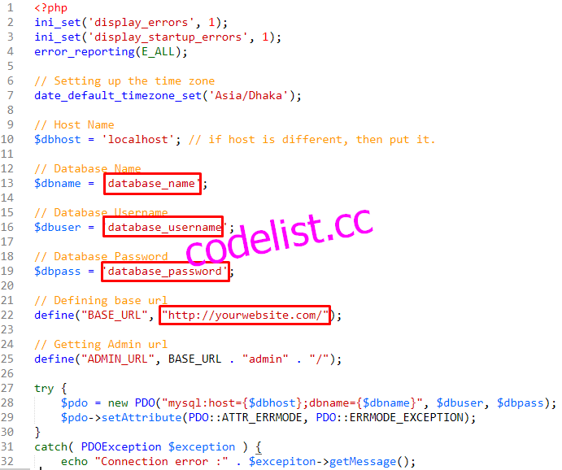

Lawyer is a responsive Law and Attorney Firm related Website Content Management System (CMS). It is a complete solution for a law firm or justice website. This CMS is built completely with PHP and MySQL. It has a nice and attractive front end and back end interface that are really awesome and eyecatching. The back end has a lot of nice and maintainable features that are needed for a modern and professional website to handle the contents easily by client. Almost all kinds of changes are possible to do using the admin panel without having any kind or programming language knowledge.
This CMS is built using the procedural php and without any framework. For this reason, it can be customized easily by most of the developers. This CMS script was prepared using the PDO feature of PHP language. That’s why, no SQL injection and XSS attack is possible here and your website will be safe. Also in all pages, admin level security and invalid page url submission checking were done.
This CMS script has the following features:
Following modules must be activated on your server:
In order to install the CMS, please follow these steps:


In order to login to the admin panel, go to the url below:
http://www.yourwebsite.com/admin
Here "yourwebsite" is your main domain name. Just after your main url, you have to put "admin" and that's it.
There are 3 levels of admins. Those are:
Super Admin: Super admin has full control over the website. He can create, delete, edit new admins, publishers and other super admin.
Admin: Admin also has the full control over the website. But he can not create, delete, edit other super admins or admins. He can only edit his own information. But admin can create, edit and delete publishers.
Publisher: Publisher can only publish, edit or delete news. He does not have other controls over the website.
Super Admin Login Credentials:
Email: sadmin@gmail.com
Password: 1234
Admin Login Credentials:
Email: admin@gmail.com
Password: 1234
Publisher Login Credentials:
Email: publisher@gmail.com
Password: 1234
In order to run the script without problem, you have to set up the email (with SMTP) properly. So, from the admin panel, go to Settings > Email. Change the information given there according to your requirements.
In order to change the profile information like admin login email, admin login password and other information, go to top right corner. Click on the admin name like this photo and go to Edit Profile section:
You will get all the details about an update in this section:
- Replaced ckeditor with summernote. - Preloader on/off option added. - Google Recaptcha on/off option added. - SMTP email system added for all emails. - Admin panel forget password system added. - Changed database encode to UTF-8 for all tables. - Toastr floating messages added for front end.
- root > assets > mail > contact.php
- root > admin > style.css into root > admin > css > style.css
- root > admin > ckeditor
- root > page.php - root > header.php - root > footer.php - root > admin > config.php - root > admin > header.php - root > admin > footer.php - root > admin > settings.php - root > assets > css > style.css - root > assets > css > bootstrap.min.css - root > assets > css > responsive.css - root > admin > css > bootstrap.min.css
- root > admin > forget-password.php - root > admin > reset-password.php - root > admin > reset-password-success.php - root > admin > fonts > summernote.eot - root > admin > fonts > summernote.ttf - root > admin > fonts > summernote.woff - root > admin > js > summernote.js - root > admin > css > summernote.css - root > assets > css > toastr.min.css - root > assets > js > toastr.min.js - root > assets > mail > class.phpmailer.php - root > assets > mail > class.smtp.php - root > assets > mail > Exception.php - root > assets > mail > OAuth.php - root > assets > mail > PHPMailer.php - root > assets > mail > POP3.php - root > assets > mail > SMTP.php
- tbl_settings (added the SMTP fields, recaptcha and preloader status fields here) - tbl_user (added the token field)
- Changed database encode to UTF-8 for all tables. In order to apply this change, paste the following code in SQL section of phpmyadmin (https://prnt.sc/w291ea). Do this for all the tables. ALTER TABLE your_table_name CONVERT TO CHARACTER SET utf8 COLLATE utf8_unicode_ci;
1. Added Google re-captcha into the contact page form. 2. Updated the documentation about the setup of re-captcha site key. 3. Updated the database to add re-captcha site key.
Fixed: Service box responsiveness issue.
Initial Release
We give reply to our support emails within 24-48 hours.
If you request us help, which only needs us to write a couple lines of code, we will assist you in that. But if your query requires to write a lot of codes to be published, we can only provide you guidance and you need to hire a developer if you don't have that skills to implement it yourself.